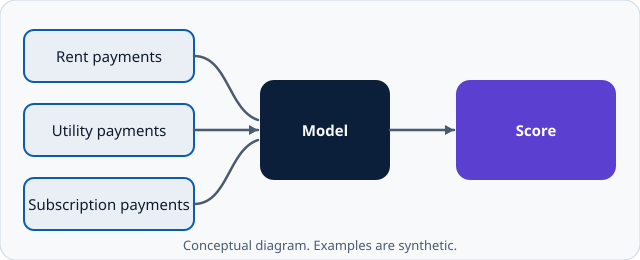

How it works
This page explains the idea in general terms. The example is deliberately simple, and the data it uses is synthetic. It is not a validated model.
What alternative data is
Alternative data is information used in assessing credit that does not come from conventional credit reports. Examples of the kinds of records people discuss include:
- Rent payments: whether rent was paid on time each month.
- Utility payments: electricity, gas, water or phone bills paid on time.
- Subscription payments: whether recurring payments succeeded or failed.
The common thread is regular, repeated payments, where a pattern of on-time behaviour can be observed over a number of months.
From data to score: the steps

- Consent. The person agrees to the use of the data, and understands what is collected and why.
- Collect. Payment records are gathered from the relevant sources, for a defined period such as the last 12 months.
- Prepare. The records are checked and tidied, for example by removing duplicates and handling missing months.
- Turn into features. Records become simple measures, such as the number of months rent was paid on time.
- Score. The features are combined by a defined rule or model into a score.
- Band. The score is placed in a band, for example higher, medium or lower.
- Review. A person reviews the result, especially for borderline or unusual cases.
A simple worked example
The Datasets page uses a toy rule, invented for this illustration: start at 500 points, add 10 points for each month of rent paid on time, add 5 points for each month of utilities paid on time, and subtract 8 points for each failed subscription payment. The rule is not based on real evidence and is not recommended for use.
Limits and cautions
Fairness
A model can treat groups differently even if it never uses sensitive characteristics directly, because other data can act as a stand-in for them. Any real use would need testing for unequal outcomes across groups, and ongoing monitoring.
Privacy and consent
Payment records are personal data. Good practice is to collect only what is needed, to explain its use, to keep it secure, and to let people withdraw consent.
Thin and uneven data
Not everyone has rent or subscription records, and records may be incomplete or wrong. A missing record should not be treated as the same as a missed payment.
Explainability
People affected by a decision should be able to understand the main reasons for it, and to correct mistakes in their data.
Human review
A score should support a decision, not make it alone. Borderline cases, data problems and unusual circumstances call for review by a trained person, who can look at the context a score cannot see.
Status of this material
VioScore is illustrative. It has not been validated, is not regulated or approved, and should not be relied on for any real decision.